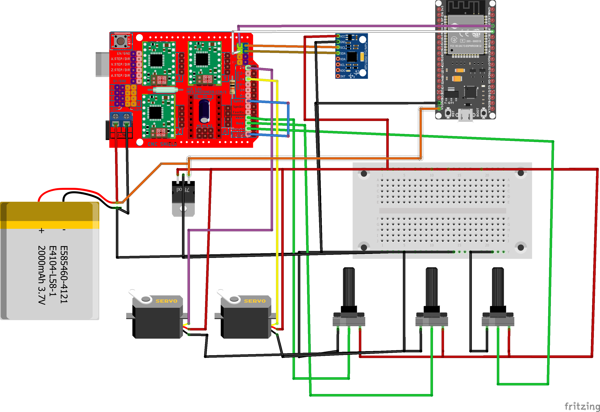
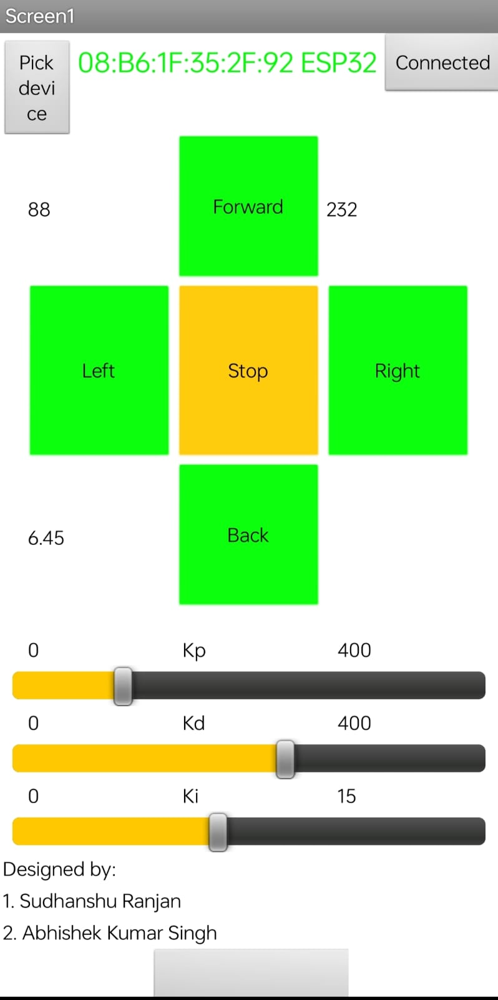

Self Balancing Bot
A two-wheeled robot that balances using a PID controller and is controlled by an Android app.

Demo Video
Demo of the robot balancing and being controlled via the Android application.
Project Overview
Aim
To balance a robot on two wheels at its normal position and control its movement through an Android app.
Introduction
The aim of this project is to make an automated vehicle that balances itself without any outside help or support. This project is a rather complex one as it involves using PID Control and involuted programming. Self-balancing robots are unique among all others, just because of their ability to balance on a given fixed position. Even if the robot is displaced from its position, it is programmed so that it again recovers its position.
View Project on GitHubTechnology & Components
Hardware Components
- MPU6050: 3-axis accelerometer & gyroscope.
- Arduino Uno: Main microcontroller board.
- Drv8825 Motor driver: Micro-stepping motor driver.
- Stepper Motor: NEMA 17 stepper motors.
- ESP32: For Wi-Fi/Bluetooth communication.
- Li-polymer battery: Power source.
- Jumper wires
Software & Concepts
- PID Control: Core balancing algorithm.
- Kalman Filter: Used to filter MPU6050 sensor data.
- TIMER Interrupt: For precise PID loop timing (TIMER2).
- Bluetooth Communication: For Android app control.
- Communication Protocol: Serial and I2C.
- PORT Control: Faster pin I/O than `digitalWrite()`.
Role of Software Components
MPU6050 Data
Initially MPU-6050 will measure the angle difference between the current position of the bot and its normal position. Now, this data is transferred to PID.
PID Tuning
PID will take input from MPU-6050 and accordingly calculate the PID value and give variable signals to both motors using interrupt service routine to bring the bot to its normal position and balance it.
Bluetooth Communication
Once the bot is balanced then we will send different commands ( forward, backward, turn left, turn right, and stop ) to the bot using Bluetooth communication to move the bot in different directions.
ISR Command
After receiving a command from Bluetooth, ISR will give different impulses to motors to move the bot according to the given command.
How It Works
- Turning the robot on.
- The servo motor position is set to a minimum position to keep the robot in a standing position.
- Receiving the data from Bluetooth.
- Data is collected from the MPU-6050 and robot angle is calculated.
- Data from MPU-6050 is filtered (Kalman Filter) to remove noise and make the data stable.
- Feeding the data in the PID controller and error is calculated by comparing it with the bot’s current angle and the balance point is delivered as output from the PID controller which will be in a linear data form.
- Converting the linear PID balance point into a logarithmic balance point for running the stepper motor at variable speed.
- Controlling the left and right motor separately.
-
For control:
- Turning: Change the balance point of PID for both motors separately.
- Movement: Change the target angle where the robot has to balance (e.g., forward = increased target angle).
- Starting the loop again from 3rd point.
Key Features
- The robot balances on two wheels.
- We can move the robot left, right, forward, and backward via an Android app.
- Option to set the PID constants from the onboard knob as well as wirelessly from the Android application.
- The robot stands on its own with a servo motor for calibration when powered on.
- We can reset the robot wirelessly in case it falls on the ground.
- Used PORT control of Arduino for making the pin high and low as it is 60 times faster than the `digitalWrite()` function of Arduino.
Gallery
Diagrams and screenshots from the project.


Problems Faced & Solutions
A significant part of this project was troubleshooting. Here are some of the key challenges and how they were solved:
- Problem: MPU-6050 data had a lot of noise.
Solution: Implemented a Kalman filter to smooth the data. - Problem: Setting PID values by re-uploading code was slow.
Solution: Added three onboard knobs (potentiometers) and a feature in the app to set PID constants wirelessly. - Problem: Bluetooth connection (ESP32) was unstable.
Solution: Traced to undervoltage. Powered the ESP32 directly with 11v from the battery. - Problem: Potentiometer values were unstable, causing oscillations.
Solution: The servos were drawing too much power from the same 5v regulator. Powered the potentiometers directly from the Arduino's 5v pin for a stable reference. - Problem: `TIMER1` interrupt (ISR) clashed with the Servo library.
Solution: Switched to `TIMER2` for the stepper motor impulse ISR, as `TIMER1` is used by the Servo library and `TIMER0` is used by `delay()`. - Problem: Stepper motor speed was limited.
Solution: Tuned the ISR to a 200us pulse for full-speed operation. - Problem: Code was getting stuck in `setup()`.
Solution: Moved D13 output definition from `setup()` to an `if` statement inside the `loop()` to avoid a reset issue. - Problem: PID `Ki` (integral) term was "winding up" and becoming too large, hurting responsiveness.
Solution: Clamped the `Ki` error term within a range (-200 to 200). - Problem: Android app (MIT App Inventor) wouldn't show Bluetooth devices on newer phones.
Solution: Added code to the app to explicitly ask the user for Bluetooth permissions, a requirement for Android 9+. - Problem: Needed faster I/O in the ISR.
Solution: Used direct PORT control instead of `digitalWrite()`, which is ~60x faster. - Problem: Servo would jitter and waste power after startup.
Solution: Detached the servo in software after the main loop ran 200 times.
Real-life Applications
- Self-balancing algorithms can be used in rocket propulsion systems (thrust vectoring).
- Can be used in warehouses for moving goods (like a Segway).
- Can be used for surveillance in any terrain.
Resources
Links to the source code and tutorials used during development.
App Package: Self balancing bot app.zip (Included in GitHub repo)